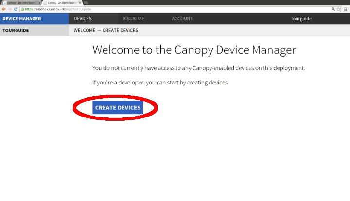
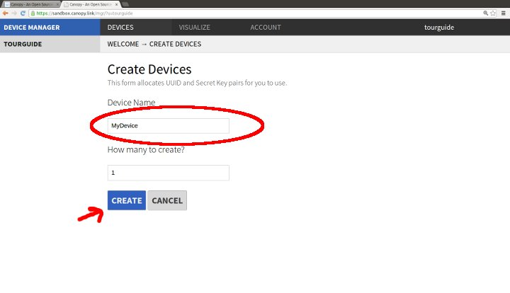

Now that you have an account you can create Device resources on the Canopy Server. Click "Create Devices".

Pick a name for the device (it can always be changed later) and enter the
quantity you would like to create (just choose 1 for now). Then click
"CREATE"
